МИСТЕРСТВО ТРАНСПОРТНОГО СТРОИТЕЛЬСТВА
ИНСТРУКЦИЯ
ПО ИЗЫСКАНИЯМ И ПРОЕКТИРОВАНИЮ
ПРИТРАССОВЫХ АВТОМОБИЛЬНЫХ ДОРОГ
В УСЛОВИЯХ
СИБИРИ И ДАЛЬНЕГО ВОСТОКА
ВСН-195-83
Утверждена Министерством транспортного строительства
12.05.83 № ЛН-580
Согласована Госстроем СССР 05.08.82 № ДП-4393-1
Москва 1983
предисловие
Настоящая Инструкция содержит требования по изысканиям и проектированию вновь сооружаемых притрассовых автомобильных дорог для строительства новых железнодорожных линий в условиях Сибири и Дальнего Востока.
Инструкция подготовлена в развитие главы СНиП Нормы проектирования автомобильных дорог и с учетом «Методических рекомендаций по конструированию, строительству и содержанию временных автомобильных дорог в условиях строительства БАМа» (М., Союздорнии, 1975) и «Рекомендаций по проектированию притрассовых автодорог в Сибири» (ЦНИИС, 1980).
В Инструкции использован опыт проектирования, строительства и эксплуатации притрассовых автомобильных дорог на строительстве железнодорожных линий Тюмень-Сургут-Уренгой, Сургут-Нижневартовск и др.
Инструкция разработана инженерами И.Ф. Хвостиком и Н.К. Логиновой (ЦНИИС) при участии кандидатов техн. наук В.Я. Ткаченко (СибЦНИИС Л.А. Маркова и А.Е. Мераликина (Союздорнии), Б.О. Попова (Омский филиал Союздорнии), В.Г. Попова (Кузнецкий политехнический институт).
Зам. директора института Н.Б. Соколов
|
Министерство транспортного строительства (Минтрансстрой) |
Ведомственные строительные нормы |
ВСН 195-83 |
|
Инструкция по изысканиям и проектированию притрассовых автомобильных дорог в условиях Сибири и Дальнего Востока |
Вновь |
1.1. Нормы настоящей Инструкции должны соблюдаться при изысканиях и проектировании притрассовых автомобильных дорог, сооружаемых вдоль новых железнодорожных линий в Сибири и на Дальнем Востоке.
1.2. Нормы настоящей Инструкции с разрешения соответствующего ведомства могут быть применены и в других регионах страны, имеющих сходные естественно-географические условия, а также для изысканий и проектирования притрассовых автомобильных дорог при строительстве других линейных сооружений - трубопроводов, линий электропередач и т.п.
|
Внесена Всесоюзным научно-исследовательским институтом транспортного строительства (ЦНИИС) |
Утверждена Министерством транспортного строительства «12» мая 1983 г. |
Срок введения в действие «1» сентября 1985 г. |
1.3. Притрассовые автомобильные дороги предназначаются в первую очередь для транспортного обслуживания строительства новых железнодорожных линий; средства на их сооружение необходимо предусматривать в проектах и сметах на строительство железных дорог.
1.4. Технико-экономическое обоснование сооружения постоянной или временной притрассовой автомобильной дороги следует разрабатывать в проекте железной дороги.
1.5. Типографическая, инженерно-геологическая, гидрологическая и другая необходимая для проектирования притрассовой автомобильной дороги информация о местности должна быть получена в процессе комплексных изысканий и обследований (камеральных и полевых), проводимых для проектирования новой железнодорожной линии.
1.6. Проекты притрассовых автомобильных дорог следует разрабатывать одновременно с проектами железнодорожного пути на всех стадиях проектирования в главной взаимоувязке всех сооружений и устройств.
1.7. Притрассовые автомобильные дороги необходимо сооружать, как правило, в подготовительный период строительства железнодорожной линии в целом или ее отдельных участков (при этапном строительстве).
1.8. Срок службы притрассовой автомобильной дороги определяется временем, необходимым для укладки и балластировки железнодорожного пути по всей строящейся линии.
1.9. В отдельных случаях на значительных по протяжению участках поэтапно строящихся железнодорожных линий срок службы временной притрассовой автомобильной дороги может ограничиваться периодом ввода в эксплуатацию этих участков
1.10. Притрассовые автомобильные дороги следует сооружать из местных дорожно-строительных материалов, обеспечивая устойчивость и прочность элементов автомобильной дороги в течение заданных сроков службы.
1.11. При обосновании назначения и параметров притрассовой автомобильной дороги следует оценивать целесообразность ее использования не только в период строительства железной дороги, но также и для обслуживания линии в период эксплуатации и для перевозки народнохозяйственных грузов района тяготения.
1.12. Объем народнохозяйственных грузов по притрассовой автомобильной дороге следует определять на время строительства железной дороги и на перспективу - после ввода ее в постоянную эксплуатацию.
1.13. Целесообразность строительства и эксплуатации притрассовой автомобильной дороги в качестве постоянной необходимо оценивать в отраслевых и территориальных схемах на основании данных экономических обследований и перспективы хозяйственного освоения района тяготения железной дороги, развития транспортной сети и взаимодействия различных видов транспорта.
2.1. Притрассовые автомобильные дороги, проектируемые для строительства новых железнодорожных линий, следует выделять в класс построечных, к которым относятся:
технологические, устраиваемые к грунтовым карьерам, искусственным сооружениям, в том числе к порталам перевальных тоннелей, съезды с притрассовой дороги на железнодорожное земляное полотно;
подъездные, устраиваемые для доставки строительных грузов от пролегающих в стороне коммуникаций, баз снабжения, перевалочных пунктов длительного действия, карьеров, полигонов стройиндустрии и т.п.;
сооружаемые для строительства и эксплуатации трубопроводов, линий электропередач и других линейных хозяйств.
2.2. Основными классификационными признаками притрассовых автомобильных дорог следует считать:
продолжительность эксплуатации;
тип допускаемых к движению транспортных средств;
объем и характер перевозок;
продолжительность эксплуатации в течение года.
2.3. По продолжительности эксплуатации притрассовые автомобильные дороги могут быть:
постоянные или долговременные, со сроком службы больше или равным нормативному сроку (7 лет) окупаемости капитальных сооружений автомобильной дороги;
временные, с продолжительностью срока службы от начала строительства железной дороги до открытия рабочего движения поездов;
кратковременные, со сроком службы до одного сезона или года, в том числе автозимники.
2.4. В зависимости от объема и характера перевозок притрассовые автомобильные дороги могут бить
двухполосные;
однополосные с разъездами;
однополосные.
2.5. По продолжительности эксплуатации в течение года автомобильные дороги делят на дороги круглогодичного и сезонного действия.
2.6. Все постоянные притрассовые автомобильные дороги проектируются, как правило, для круглогодичного действия.
2.7. К подъездным относятся автомобильные дороги, устраиваемые от существующих путей сообщения к крупным объектам на строящейся железнодорожной линии.
2.8. Подъездные автомобильные дороги классифицируют по тем же признакам, что и притрассовые.
3.1. Определение объемов и динамики автомобильных перевозок по притрассовым дорогам следует производить на основании проекта организации строительства железнодорожной линии.
3.2. При назначении параметров проектирования притрассовых автомобильных дорог должны быть учтены объемы перевозок оперативных, технологических, а также народнохозяйственных грузов.
3.3. В составе оперативных перевозок следует учитывать предназначенные для обеспечения нормального функционирования строительных подразделений материалы, перевозки, связанные с передислокацией строительно-монтажных подразделений, обеспечением горюче-смазочными материалами, запасными частями, продовольствием, промышленными и другими товарами, с доставкой работающих на объекты и обратно, со служебными и личными поездками строителей и т.п.
3.4. Объем оперативных перевозок Q, тыс.т×км/км, в рассматриваемом сечении дороги при укрупненных расчетах следует определять с помощью графика (рис. 1) в зависимости от темпов сооружения земляного полотна железной дороги t3, км/год, в одном направлении и покилометрового объема земляных работ Vз, тыс. м3/км.
Рис. 1. График определения объема оперативных перевозок в рассматриваемом сечении дороги
3.5. Более точно объем и динамику оперативных перевозок следует определить с помощью расчета, учитывая ожидаемые перевозки строительно-монтажных поездов, механизированных колонн, мостопоездов и др.
3.6. Предстоящие перевозки к крупным барьерным объектам (тоннели, внеклассные мосты и пр.) следует определять отдельно в соответствии о выбранной оптимальной схемой транспортного их обслуживания.
3.7. Объемы и динамику технологических перевозок следует определять по данным проектов железнодорожной линии.
3.8. В состав технологических грузов долины быть включены:
грузы для возведения железнодорожного земляного полотна;
материалы и конструкции для искусственных сооружений железной и притрассовой автомобильной дороги;
материалы и конструкции для возведения необходимой (первоэтапной) части производственных и жилых зданий, связи, СЦВ, водоснабжения, энергоснабжения, теплоснабжения, дорожной одежды притрассовой автомобильной дороги и пр.
3.9. Для укрупненных расчетов объемы каждого вида перевозок Q допускается определять по формулам:
Q = Ркм × lср × Д или Q = Vкм × g × lср × Д,
где Ркм - масса материалов, необходимых на 1 км трассы;
Vкм - объем материалов, необходимых на 1 км трассы, м3;
g плотность материала, т/м3;
lср - средняя дальность возки данного материала, км;
Д - доля общих перевозок, приходящаяся на дорогу при автовозке материалов для сооружения земляного полотна железной дороги, принимается по табл. 1.
Таблица 1
|
lср |
0,5 |
0,75 |
1,0 |
1,5 |
2,5 |
5,0 |
0,75 |
|
Д |
0,67 |
0,80 |
0,85 |
0,90 |
0,94 |
0,97 |
0,98 |
Примечание. Для определения объемов перевозок всех остальных материалов Д следует принимать равной 1.
3.10. Объем перевозок народнохозяйственных грузов по автомобильной дороге следует определять с учетом освоения и развития района тяготения новой железной дороги и размещения пунктов зарождения и погашения грузов, устанавливая этот объем в процессе разработки проекта железной дороги и уточняя в дальнейшем.
3.11. В проекте следует предусматривать долевое участие грузоотправителей и грузополучателей народнохозяйственных грузов в затратах на строительство притрассовой автомобильной дороги пропорционально размерам их перевозок с учетом грузоподъемности транспортных средств.
3.12. Перевозки народнохозяйственных грузов надлежит принимать в расчет на период от окончания строительства притрассовой автомобильной дороги до открытия временной эксплуатации железнодорожной линии по всему ее протяжению или по отдельным участкам.
Примечание. При ориентировочных расчетах годовой объем перевозок народнохозяйственных грузов допускается принимать от 50 до 200 тыс. т (нетто) в одном направлении.
3.13. Расчет предстоящих перевозок следует выполнять с построением эпюр для отдельных видов и групп грузов; суммарные размеры следует увеличивать на 15 % для компенсации перевозок, неучтенных при укрупненных расчетах.
3.14. Результаты расчетов объема перевозок по участкам притрассовой автомобильной дороги должны быть представлены в виде ведомости по форме табл. 2
Таблица 2
|
Вид перевозок |
Грузонапряженность (нетто), тыс. т×км/км |
||||
|
По участкам |
Средневзвешенная |
||||
|
км … |
км … |
км … |
км … |
||
|
Оперативные |
|
|
|
|
|
|
Технологические |
|
|
|
|
|
|
Неучтенные 15 % |
|
|
|
|
|
|
Итого построечных |
|
|
|
|
|
|
Народнохозяйственные |
|
|
|
|
|
|
Всего |
|
|
|
|
|
3.15. При проектировании притрассовых автомобильных дорог перевозки следует определять в виде грузонапряженности qmax, т×км/км, в оба направления в конкретном сечении автомобильной дороги за период максимальной интенсивности движения.
3.16. При проектировании необходимо установить расчетную грузонапряженность, т×км/км, либо интенсивность движения транспортных средств в течение определенного промежутка времени (года, месяца, суток, часа пик, авт./сут., авт./ч и т.п.) по методике, изложенной в приложении 1.
3.17. Максимальную грузонапряженность qmax, т×км/км, притрассовой дороги за месяц надлежит определять по формуле
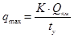
,где Qкм - грузонапряженность по притрассовой автомобильной дороге за время строительства железнодорожной линии, т×км/км;
К - коэффициент пропорциональности, определяемый по формуле К = 0,0045 ty + 0,857;
tу - интервал времени от начала работ в данном сечении трассы до открытия рабочего движения поездов (месяцы).
Примечание. При отсутствии более точных данных допускается принимать в расчетах, что максимальная среднесуточная интенсивность движения достигается после начала строительства через промежуток времени t = 0,75 ty.
3.13. Интенсивность движения автомобилей в обоих направлениях следует устанавливать делением объема перевозок за определенный период (с учетом сезонности) на среднюю грузоподъемность транспортных средств и на число дней в периоде с учетом коэффициентов использования грузоподъемности транспортных единиц.
4.1. Категорию притрассовых автомобильных дорог на всем протяжении или по участкам следует определять в зависимости от среднегодовой суточной интенсивности движения транспортных единиц по ней в период наиболее интенсивного ее использования для строительства железной дороги.
4.2. В Сибири и на Дальнем Востоке, где полотно и одежда притрассовых автодорог полгода находятся в мерзлом состоянии, категорию притрассовой автомобильной дороги допускается в отдельных случаях определять по суточной интенсивности движения автотранспорта, средней за безморозный период год, когда дорога находится в таком состоянии, предусматривая при этом в проектах организации строительства железной дороги перевозку большей части строительных грузов в зимний период.
4.3. В тех случаях, когда по притрассовой автомобильной дороге предусматриваются перевозки с применением автомобилей и автопоездов различных по весовым параметрам и габаритам, в том числе автомобилей большой грузоподъемности, категорию дороги следует определять по расчетной интенсивности движения, приведенной к легковому автомобилю в соответствии с главой СНиП Нормы проектирования автомобильных дорог.
4.4. При назначении категории притрассовых автомобильных дорог также следует учитывать их использование после окончания строительства железнодорожных линий в качестве постоянных дорог, предназначенных для нужд эксплуатации железной дороги; автомобильных дорог промышленных предприятий; внутрихозяйственных дорог совхозов и колхозов или автомобильных дорог общего пользования.
В этих случаях нормы на проектирование дорог устанавливаются по главе СНиП Нормы проектирования автомобильных дорог в соответствии с их назначением.
4.5. Притрассовые автомобильные дороги, предназначенные для транспортного обслуживания строительства новых железнодорожных линий и не предполагаемые для использования после окончания строительства, в зависимости от расчетной интенсивности движения транспортных средств подразделяются на три категории в соответствии с табл. 3.
Таблица 3
|
№ п/п |
Назначение притрассовой автомобильной дороги |
Категория дороги |
|
|
1 |
Постоянная круглогодичного действия |
200 - 500 |
IVо |
|
2 |
Постоянная круглогодичного или сезонного действия |
100 - 200 |
Vо |
|
3 |
Временная |
До 100 |
VI |
Примечание. Индекс « о » указывает на отличие от дорог, проектируемых по СНиП Нормы проектирования автомобильных дорог.
4.6. Расчетные скорости движения автотранспорта для проектирования элементов плана, продольного и поперечных профилей притрассовых автомобильных дорог следует принимать по табл. 4.
Таблица 4
|
Категория дороги |
Расчетные скорости, км/ч |
|||||
|
Основные |
Допускаемые на трудных участках местности |
|||||
|
пересеченной |
горной |
|||||
|
Для плана и продольного профиля |
Для поперечного профиля и других элементов, зависящих от скорости |
Для плана и продольного профиля |
Для поперечного профиля и других элементов, зависящих от скорости |
Для плана и продольного профиля |
Для поперечного профиля и других элементов, зависящих от скорости |
|
|
IVо |
80 |
80 |
60 |
60 |
40 |
40 |
|
Vо |
60 |
60 |
40 |
40 |
30 |
30 |
|
VI |
40 |
40 |
30 |
30 |
25 |
25 |
К трудным участкам горной местности относятся перевалы через горные хребты и подходы к ним со сложными, сильно изрезанными или недостаточно устойчивыми склонами.
4.7. Расчетные скорости грузовых автомобилей (90 % и более от общей интенсивности движения) преимущественно большой и особо большой грузоподъемности при соответствующем технико-экономическом обосновании допускается уменьшать по сравнению с приведенными в табл. 5 значениями не более чем на 30 %.
4.8. Основные параметры плана и продольного профиля притрассовой автомобильной дороги надлежит принимать по данным табл. 5.
Таблица 5
|
Расчетная скорость V, км/ч |
Наибольшие продольные уклоны, % |
Расчетное расстояние видимости, м |
|||||
|
поверхности дороги |
встречного автомобиля |
В плане |
В продольном профиле |
||||
|
выпуклых |
вогнутых |
||||||
|
основных |
допускаемых в исключительных случаях |
||||||
|
80 |
60 |
100 |
200 |
250 |
5000 |
2000 |
1000 |
|
60 |
70 |
75 |
150 |
125 |
2500 |
1500 |
600 |
|
50 |
80 |
60 |
120 |
100 |
1500 |
1200 |
400 |
|
40 |
90 |
50 |
100 |
60 |
1000 |
1000 |
300 |
|
30 |
100 |
40 |
30 |
30 |
600 |
600 |
200 |
4.9. Когда предусматривается на перспективу использование притрассовых автомобильных дорог в качестве автомобильных дорог общего пользования, их категории устанавливаются в зависимости от общей среднегодовой суточной интенсивности движения в период наиболее интенсивного ее использования для строительства железной дороги: III категория - свыше 500; IV категория - от 100 до 500, V категория - до 100 автомобилей в сутки.
4.10. Расчетные скорости движения для проектирования элементов плана и продольного профиля притрассовых дорог следует принимать по СНиП Нормы проектирования автомобильных дорог.
4.11. Основные параметры поперечного профиля проезжей части притрассовых дорог и земляного полотна в зависимости от категории дорог следует принимать по СНиП Нормы проектирования автомобильных дорог.
4.12. Проезжую часть дороги V категории разрешается принимать шириной 4 м с обочинами 0,75 м при условии устройства разъездов для встречных автомобилей на расстоянии видимости. Ширина разъезда 7 м, длина 20 м. Постепенное сужение разъезда до ширины проезжей части дороги осуществляется на длине 20 м с каждой стороны.
4.13. Когда по условиям местности представляется технически возможным и экономически целесообразным, следует принимать:
продольные уклоны не более ………………….. 40 %;
поперечные уклоны ……………………………. от 25 до 30 %;
радиусы кривых в плане……………………..… не менее 250 м;
расстояние видимости поверхности дороги …. не менее 150 м;
радиусы вертикальных выпуклых кривых …... не менее 5000 м;
радиусы вертикальных вогнутых кривых ……. не менее 2000 м.
Радиусы кривых в плане и продольном профиле при соответствующем технико-экономическом обосновании могут быть уменьшены по сравнению с требованиями СНиП Нормы проектирования автомобильных дорог до 30 %, а при установке дополнительных дорожных знаков или регулировании движения - до 50 %.
При радиусах кривых в плане менее 350 м необходимо предусматривать уширение проезжей части с внутренней стороны за счет обочин, при этом их ширина должна быть не менее 1 м.
В горной местности при затяжных продольных уклонах более 60 % через каждые 2 - 3 км для остановки автомобилей следует предусматривать места с уменьшенными продольными уклонах (20 % и менее) или горизонтальные площадки длиной не менее 50 м.
4.14. При ширине расчетного автомобиля более 2,5 м параметры поперечного профиля дорог следует назначать в соответствии с данными табл. 6
Таблица 6
|
Ширина расчетного автомобиля, м |
Ширина полосы движения, м |
Ширина земляного полотна, м |
||
|
Категория дороги |
||||
|
IVо |
Vо |
VI |
||
|
2,75 |
4,0 |
13 |
12 |
12,5 |
|
3,20 |
4,5 |
14 |
13 |
12,5 |
|
3,50 |
5,0 |
15 |
14 |
13,5 |
|
3,80 |
5,5 |
16 |
15 |
14,5 |
4.15. В случаях, когда предусматривается на перспективу использование притрассовых автомобильных дорог в качестве автомобильных дорог промышленных предприятий, их категории устанавливаются по главе СНиП Нормы проектирования автомобильных дорог.
4.16. Значение коэффициентов приведения интенсивности движения различных транспортных средств к легковому автомобилю следует принимать по данным главы СНиП Нормы проектирования автомобильных дорог.
5.1. Общее направление притрассовой автомобильной дороги должно совпадать с направлением железной дороги, для обеспечения строительства которой она проектируется.
5.2. В равнинных местностях, где трасса железной дороги уложена вольным ходом, длинными прямыми и кривыми больших радиусов, ось притрассовой автомобильной дороги следует проектировать параллельно оси железнодорожного пути, повторяя ее в плане.
5.3. На участках сложного плана с петлеобразным вписыванием железнодорожной трассы в рельеф местности автомобильную дорогу в обоснованных случаях допускается спрямлять, предусматривая при необходимости устройство технологических подъездов к железнодорожным сооружениям (рис. 2).
Рис. 2. Схема петлеобразного развития линии:
_______ - железная дорога; _ _ _ _ - автомобильная дорога
5.4. При особо сложном рельефе местности и плане линии, как показано на рис. 3, когда проектирование притрассовой автомобильной дороги параллельно железнодорожной трассе явно нецелесообразно, выбор направления притрассовой автомобильной дороги и технологических подъездов от нее к железнодорожным сооружениям следует производить на основе вариантных проработок и их технико-экономического сравнения.
Рис. 3. Схема развития линии «Тройная» петля:
5.5. В каньонообразной местности, где предельного уклона автомобильной дороги недостаточно для следования ее рядом с железной дорогой, а также на переходах постоянно действующих водотоков допускается удаление автомобильной дороги от оси железной дороги с вписыванием в рельеф местности.
5.6. Трасса автомобильной дороги как при спрямлении, так и при глубоком вписывании должна обосновываться так, чтобы суммарные расходы на транспортирование строительных грузов по автомобильной дороге, включая затраты на строительство и эксплуатацию ее, были минимальными.
5.7. Притрассовую автомобильную дорогу у железнодорожных выемок следует размещать на отдельном самостоятельном полотне, а у насыпей - отдавать предпочтение устройству ее на общем полотне в виде бермы железнодорожной насып (рис. 4, а).
Рис. 4. Схемы размещения автомобильной дороги с железнодорожной насыпью на общем (а) и отдельном (б) полотне:
b - ширина основной площадки железной дороги; b1 - ширина поверху притрассовой автомобильной дороги; h и h1 - высота железнодорожной и автодорожной насыпи соответственно; 1 : п - крутизна откоса насыпи
5.8. В сложных условиях болот, марей, на грунтах III и IV категорий просадочности, где с целью обеспечения надежности земляного полотна при эксплуатации требуется сооружение дополнительных специальных устройств, размещение обеих дорог на раздельном земляном полотне должно быть обосновано технико-экономическими рычагами.
5.9. Проезжую часть устраиваемой на общей насыпи притрассовой автомобильной дороги следует проектировать не менее чем на 0,5 м ниже отметки бровки земляного полотна железной дороги В случае необходимости расположения проезжей части автомобильной дороги на общей насыпи в одном уровне с бровкой железнодорожного полотна необходимо предусматривать ограждение, исключающее возможность наезда автомашин на железнодорожный путь.
5.10. При расположении автомобильной дороги на самостоятельном полотне рекомендуется в удобных местах сближать трассы обеих дорог, устраивая их на общем полотне. При этом следует предусматривать устройство специальных площадок для подъезда автомобилей с линейными работниками железной дороги непосредственно к железнодорожному полотну.
5.11. Удаление от оси железнодорожной насыпи притрассовой автомобильной дороги, запроектированной на отдельном полотне, должно быть минимальным, однако достаточным для размещения между подошвами насыпей бермы и общей для обеих дорог водоотводной канавы (рис. 4, б).
Расстояние М между осями железной дороги и притрассовой автомобильной дороги должно быть не менее:
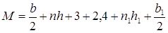
,где 1/n и 1/n1 - крутизна откоса железной и автомобильной дорог соответственно.
5.12. Не участках скальных прижимов притрассовую автомобильную дорогу рекомендуется проектировать с низовой стороны у подошвы откосов железнодорожной насыпи.
5.13. В обоснованных случаях притрассовую автомобильную дорогу допускается размещать с верховой стороны по камненулавливающей траншее.
5.14. На косогорных участках, где железнодорожная линия запроектирована выемкой, притрассовую автомобильную дорогу следует располагать с низовой стороны с удалением подошвы автомобильной дороги от бровки выемки не менее чем на 5 м рис. 5).
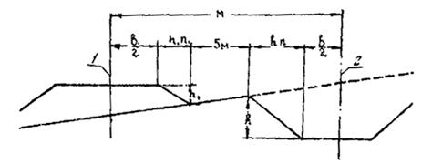
Рис. 5. Схема размещения притрассовой автомобильной дороги на косогорных участках:
1 - ось автодороги; 2 - ось железной дороги
5.15. При расположении притрассовой автомобильной дороги за кавальером в виде бермы следует руководствоваться указаниями п. 5.7.
5.16. В пределах раздельных пунктов притрассовую автомобильную дорогу следует размещать со стороны пассажирского здания и будущего поселка.
5.17. На перегонах притрассовую автомобильную дорогу рекомендуется располагать со стороны грунтовых карьеров.
5.18. На пойменных участках притрассовую автомобильную дорогу следует проектировать с низовой (прирусловой) стороны, допуская в стесненных условиях использование для проезда участков скальных русл водотоков.
5.19. В районах с наличием вечной мерзлоты притрассовую автомобильную дорогу следует проектировать в виде бермы железнодорожной насыпи, но учитывая при этом, что дороги возводятся иногда с длительным разрывом во времени.
5.20. При невозможности по мерзлотно-грунтовым условиям размещать притрассовую автомобильную дорогу на общем полотне, ее проектируют как самостоятельное сооружение с отдалением от железной дороги на расстояние, превышающее зону взаимного влияния дорог.
5.21. Сторонность притрассовой автомобильной дороги относительно железнодорожного пути надлежит выбирать с учетом сооружения в последующем второго пути, электрификации линии и на основе технико-экономического сравнения вариантов по строительным и эксплуатационным показателям.
5.22. В обычных условиях на равнинной и слабохолмистой местности притрассовую автомобильную дорогу допускается располагать по любую сторону от железнодорожного пути, руководствуясь требованиями пп. 5.16 и 5.17.
5.23. На подходах к мостам с совмещенной ездой поездов и автотранспорта в отдельных обоснованных случаях вместо устройства двухсторонних съездов с железнодорожной насыпи следует предусматривать возможность проезда автомобилей под железнодорожными мостами (рис. 6).
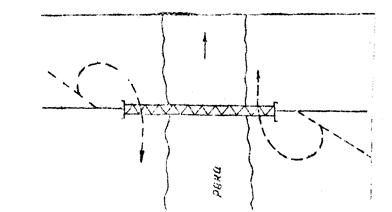
Рис. 6. Схема совмещения железной и автомобильной дорог на мосту:
_______ - железная дорога; ------- - автомобильная дорога
5.24. Проектные решения по притрассовой автомобильной дороге должны быть нанесены на план линии, продольный и поперечный профили железной дороги; на поперечных профилях, кроме того, обязательно должны быть показаны водоотводные и нагорные канавы, резервы, кавальеры, способы укрепления откосов и т.п. с указанием очередности их выполнения строителями.
6.1. Пересечения притрассовой автомобильной дороги с железнодорожным путем допускаются как в одном, так и в резных уровнях (последнее предпочтительно).
6.2. Пересечение притрассовых автомобильных дорог со строящейся железной дорогой в одном уровне следует проектировать в районах горловин раздельных пунктов вне пределов путевого развития.
6.3. При одновременном проектировании притрассовой автомобильной дороги и железнодорожного пути следует всегда изыскивать экономичные решения для пересечения их в разных уровнях. Для этого могут быть использованы железнодорожные мосты, а иногда водопропускные трубы. Последние должны быть соответственно запроектированы.
6.4. Тип пересечения притрассовой дороги с другими существующими автомобильными дорогами (в одном и в разных уровнях) следует определять в зависимости от интенсивности движения по ним. Пересечения с дорогами I категории надлежит проектировать, как правило, в разных уровнях; в ряде случаев для этого целесообразно использовать ближайшие мосты на постоянной автомобильной дороге.
6.5. Пересечения железных и автомобильных дорог в одном уровне и примыкания к другим автомобильным дорогам следует проектировать на свободных от зарослей площадках и на прямых участках пересекающихся или примыкающих дорог. Пересечение предпочтительно устраивать на нулевых местах или на невысоких (до 2 м) насыпях.
6.6. Продольные уклоны пересекающихся автомобильных дорог на подходах к пересечениям на протяжении расчетных расстояний видимости не должны превышать 40 ‰.
6.7. При пересечении притрассовой дорогой существующих автомобильных дорог с твердым покрытием на въездах надлежит предусматривать также твердое покрытие в каждую сторону от оси пути на протяжении:
При пересечении дорог I - III категории …… от 50 до 150 м;
» » » IV категории ……. 25 м.
6.8. покрытия на въездах следует предусматривать не ниже переходного типа.
6.9. Ширину проезжей части притрассовых автомобильных дорог на пересечениях в одном уровне с железными дорогами следует принимать не менее 6 м на расстоянии по 200 м в обе стороны от переезда.
6.10. Пересечения притрассовых автомобильных дорог с трубопроводами (водопровод, канализация, газопровод, нефтепровод, теплотрассы и т.п.), а также с кабелями линий связи и электропередач следует увязывать с проектом пересечения железнодорожного пути, соблюдая требования существующих нормативных документов проектирования этих устройств.
7.1. Топографическая, инженерно-геологическая, мерзлотная, гидрологическая и другая информация о местности, получаемая в процессе изысканий для проектирования железнодорожных линий, должна быть достаточной для проектирования притрассовых автомобильных дорог.
7.2. На предпроектной стадии необходимую (см. п. 1.5) информацию о местности следует получать без выезда на полевые работы, т.е. по литературным источникам, данным изысканий прошлых лет и имеющимся топографическим, геологическим, гидрологическим и климатическим картам.
7.3. Если для составления основных проектных решений по железнодорожной линии требуются полевые (по всему комплексу или по отдельным видам устройств) изыскания линии или сложных ее участков, таковые одновременно следует делать и для проектирования притрассовой автомобильной дороги.
7.4. Для обеих стадий проектирования железной и притрассовой автомобильной дорог полевые изменения обязательны.
7.5. Сухопутные и водные пути сообщения подлежат особо тщательным обследованиям с целью выявления их состояния, провозной способности и перспективы развития.
7.6. Перед выездом на полевые работы целесообразно составить план организации строительства будущей железной дороги и схему перевозок строительных грузов с учетом плана притрассовой автомобильной дороги, на основании которого выявить участки, где по каким-либо причинам нельзя продолжить автомобильную дорогу рядом с железнодорожным путем, и обязательно указать в задании на необходимость производства расширенных изысканий и обследований таких участков.
7.7. К участкам, неблагоприятным для проложения автомобильной дороги рядом с железнодорожным путем, следует относить:
тоннельные пересечения перевалов и отдельных мысов;
переходы больших рек и средних водотоков;
пересечения глубоких болот;
пересечения железной дорогой в разных уровнях существующих автомобильных дорог с интенсивным движением с использованием расположенных вблизи путепроводов.
7.8. Необходимо особо тщательно обследовать предусматриваемые места пересечений автомобильной дороги с железнодорожным путем (в одном и разных уровнях).
7.9. Планы в горизонталях (сетки) у искусственных сооружений, надлежит снимать в границах, достаточных для проектирования сооружений одновременно под железную и автомобильную дороги.
7.10. Когда мосты малых отверстий и водопропускные трубы располагаются на значительном удалении друг от друга, следует производить съемку русла и берегов между сооружениями. Площадь съемки должна быть достаточной для проектирования устройств, обеспечивающих свободный пропуск потока между ними.
7.11. В районе мостовых переходов через постоянные водотоки должны быть изучены в полевых условиях места, где возможны пересечения водотоков автотранспортом вброд.
7.12. На малых периодических водотоках должна быть тщательно изучена возможность пересечения их притрассовой автомобильной дорогой с устройством укрепленного русла без искусственного сооружения.
7.13. На водотоках, где окажется целесообразным устройство общей для обеих дорог водопропускной трубы, инженерно-геологическое обследование должно быть достаточным для ее проектирования.
8.1. Наименьший радиус горизонтальных кривых следует назначать в зависимости от расчетных скоростей движения автотранспорта в соответствии с требованиями п. 4.6.
8.2. На равнинных участках местности при расположении притрассовой автомобильной дороги на общей с железной дорогой насыпи горизонтальные кривые на автомобильной дороге следует проектировать концентрично железнодорожными кривыми.
8.3. На участках пересеченного рельефа местности, где выдерживать постоянной указанную в п. 5.9 разность отметок нецелесообразно, радиусы горизонтальных кривых автомобильной дороги необходимо в каждом отдельном случае подбирать по совмещенным поперечным профилям земляного полотна, допуская при этом на автомобильной дороге радиус 100 м и наибольшие величины продольного уклона.
8.4. При подборе радиусов кривых для автомобильной дороги, расположенной над общей с железной дорогой водопропускной трубой, превышение отметки низа дорожной одежды над верхом трубы должно быть не менее 0,5 м.
8.5. В особо сложных условиях на небольших участках (переходы мелких водотоков, подъезды к объектам и т.п.) радиусы горизонтальных кривых на автомобильной дороге допускается уменьшать до 30 м, обязательно проверяя соблюдение габарита на случай перевозки длинномерных грузов.
8.6. Продольные уклоны и сочетания элементов профиля притрассовой автомобильной дороги следует принимать с учетом сооружения ее земляного полотна насыпью расчетной высоты по обертывающей кривой.
8.7. Наибольшие продольные уклоны и наименьшие радиусы горизонтальных кривых притрассовой автомобильной дороги следует принимать в соответствии с табл. 5
продольные уклоны …………………………….не более 40 %;
радиусы горизонтальных кривых …………….. не менее 250 м.
8.8. Наибольшие значения уклонов продольного профиля в грузовом направлении принимаются, %:
на подъемах ………………………………………..… 40;
то же, в исключительных случаях ………………….. не более 80;
на спусках …………………………………………….. 60;
то же в исключительных случаях …………………... 100.
8.9. Переломы продольного профиля при алгебраической разности 20 % и более следует сопрягать кривыми радиусом не менее 200 м и длиной не менее 20 м.
8.10. При совпадении уклона с кривой в плане радиусом 50, 40 или 30 м предельный уклон дороги необходимо уменьшать соответственно на 10, 20 и 30 %.
8.11. В горной местности при затяжных продольных уклонах (более 60 ‰) через каждые 2 - 3 км следует предусматривать участки с уменьшенными продольными уклонами (i £ 20 ‰) длиной не менее 50 м для остановки автомобилей.
8.12. Погрузочные и разгрузочные пункты следует располагать на участках дороги с продольным уклоном не более 20 ‰.
8.13. Водопропускные трубы под насыпями, малые и средние мосты допускается располагать при любых сочетаниях элементов плана и продольного профиля.
8.14. В состав проекта должен быть включен отдельным чертежом подробный продольный профиль автомобильной дороги. План линии, поперечные профили, а также сооружения на них, как правило, должны быть показаны на общих с железной дорогой чертежах.
9.1. Земляное полотно притрассовых автомобильных дорог следует проектировать в полной взаимоувязке с проектом железнодорожного пути в части материала, водоотводов, защиты от паводков, снежных обвалов и заносов, от селей, камнепадов, оползней, учета мерзлотно-грунтовых условий и т.п.
9.2. По геометрическому очертанию поперечного профиля притрассовые автомобильные дороги могут быть совмещенные (см. рис. 4, а) и раздельные (см. рис. 4, б).
9.3. По роду материала насыпи в условиях I и II типов местности могут быть из обычных глинистых грунтов; в условиях III типа предпочтительнее дренирующие грунты.
9.4. Основанием для насыпей в условиях I типа местности является естественная поверхность земли (рис. 7, в).
9.5. В местности II типа под насыпями из глинистых грунтов необходимо предусматривать устройство сланей (рис. 7, б).
Рис. 7. Схемы насыпей в условиях I (а) и II (б) типов местности
9.6. Под насыпями из скальных и дренирующих пород в условиях II и III типов местности для лучшего распределения нагрузок на основание, чтобы избежать просадок, застоя воды и т.п., необходимо предусматривать устройство слоя из торфа, хвороста или порубочных остатков.
9.7. При выборе конструкции земляного полотна следует учитывать категорию дороги, дорожно-климатическую зону, тип местности по характеру поверхностного стока и степени увлажнения.
9.8. Автомобильные дороги проектируют, как правило, насыпями из пригодных, по возможности дренирующих местных грунтов и теплоизолирующих материалов.
9.9. Минимальная высота насыпей с учетом дорожной одежды (в глинистых грунтах) II категории просадочности не должна быть менее 0,5 м.
9.10. Насыпи на торцах и грунтах III категории просадочности следует проектировать высотой не менее 1 м (включая дорожную одежду), а при отсыпке грунтами, пригодными для дорожной одежды, -не менее 0,7 м.
9.11. Насыпи на торцах и грунтах IV категории просадочности следует проектировать на сплошном настиле из бревен толщиной 15 - 25 см, на выстилке мощностью 0,3 - 0,5 м из хвороста или порубочных остатков. Минимальная высота насыпи над настилом должна быть не менее 1 м (включая дорожную одежду), а при возведении насыпи из грунтов, пригодных для дорожной одежды, - не менее 0,7 м.
9.12. При скальных, щебенистых и песчаных грунтах минимальная высота насыпей не нормируется.
9.13. Бровка полотна на подходах к мостам и трубам должна возвышаться над расчетным горизонтом воды (с учетом подпора) не менее чем на ± м при напорном и полунапорном режимах.
9.14. Вероятность превышения паводка при проектировании насыпей на переходах малых и средних водотоков следует принимать равной 3 %.
9.15. В грунтах III и IV категорий просадочности выемки проектировать не допускается.
9.16. Земляное полотно в пределах участков с основанием из скальных, крупнообломочных и песчаных грунтов надлежит проектировать без учета вечной мерзлоты.
9.17. Насыпям, располагаемым в виде берм у железнодорожного пути или у кавальеров, следует придавать односкатный поперечный профиль с уклоном не менее 20 % в полевую от железной дороги сторону.
9.18. Верх насыпей, сооружаемых отдельно от железнодорожного полотна, должен иметь двухскатное очертание с уклоном от оси к бровкам не положе 2 %.
9.19. Насыпи, возводимые отдельно от железнодорожного пути целиком из грунтов, пригодных для дорожной одежды, следует проектировать одновременно с дорожной одеждой с односкатным, двухскатным или серповидным очертанием верха.
9.20. Крутизну откосов насыпей, возводимых из местных грунтов высотой до 1 м, следует принимать 1 : 3. В остальных случаях крутизну откосов насыпей и выемок следует принимать, руководствуясь требованиями главы СНиП Нормы проектирования автомобильных дорог.
9.21. Ширину земляного полотна поверху надлежит принимать с учетом подвижного состава согласно требованиям главы СНиП «Автомобильные дороги».
9.22. Ширина земляного полотна разъездов на однополосных дорогах должна быть равна ширине соответствующей двухполосной дороги. Длина разъездов - на менее 20 м. Переход от однополосной дороги к двухполосной следует принимать длиной не менее 20 м с каждой стороны.
9.23. При проектировании земляного полотна следует руководствоваться «Указаниями по проектированию земляного полотна железных и автомобильных дорог» СН 449-72, «Указаниями по технологии возведения насыпей железных и автомобильных дорог» ВСН 134-66 и «Техническими указаниями по возведению земляного полотна автомобильных дорог из переувлажненных грунтов» ВСН 166-70.
10.1. Для притрассовых автомобильных дорог следует применять покрытия переходного и низшего типов, назначаемые в соответствии с требованиями главы СНиП Нормы проектирования автомобильных дорог и «Инструкции по проектированию дорожных одежд нежесткого типа» (ВСН-46-83). Расчет одежды притрассовых автомобильных дорог, предназначаемых в дальнейшем для постоянной эксплуатации, следует вести по инструкции с учетом допустимого уровня надежности проектируемой конструкции не менее 0,85, то же прочих построечных дорог временного типа, включая технологические дороги, с уровнем надежности не более 0,6.
10.2. Дорожная одежда должна быть прочной в отношении сопротивления деформированию под нагрузками (предупреждение просадочности, сопротивление разрушению, износ).
10.3. При выборе материалов и конструкций дорожные одежды притрассовых дорог должны:
выдерживать нагрузки автомобилей, скреперов и тяжеловесов до 12 т на одиночную ось;
устраиваться преимущественно из местных материалов;
быть устойчивыми и прочными в заданные сроки службы и, главным образом, в весеннюю распутицу;
допускать восстановление поперечного профиля дороги и ликвидацию неровностей на поверхности в процессе эксплуатации профилированием грейдерами.
10.4. Проектирование дорожной одежды состоит в выборе материалов для устройства слоев и размещении их в конструкции в такой последовательности, чтобы наилучшим образом проявились их грузораспределяющая и деформативная способности, а также прочностные свойства, в установлении количества слоев, их ориентировочных толщин и уточнении толщин расчетом.
10.5. Для сооружения слоев дорожной одежды притрассовых дорог рекомендуются следующие местные материалы: щебень, гравий и другие несвязные материалы; щебеночные и гравийные смеси; щебень и гравий, обработанные различными вяжущими; грунт, укрепленный неорганическими вяжущими.
10.6. В зависимости условий движения и наличия строительных материалов дорожные одежды проектируют однослойными или двухслойными.
10.7. На дорогах, проектируемых на бермах железнодорожного полотна, дорожная одежда устраивается односкатной; на дорогах, расположенных на отдельном земляном полотне, - серповидного поперечного профиля или двускатной.
10.8. Критерием прочности дорожной одежды является условие, при котором в грунте земляного полотна не возникнут местные пластические смещения, т.е. грунт будет находиться в допредельном состоянии, гарантом которого является неравенство ЕДОП £ Еобщ,
где ЕДОП - допустимый модуль упругости дорожной одежды;
Еобщ - общий модуль упругости, получаемый в результате расчета дорожной одежды.
10.9. Допустимый модуль упругости ЕДОП, при котором не возникнут местные пластические смещения в грунте земляного полотна, устанавливают по вертикальной шкале номограммы рис. 1 приложения 2 в зависимости от приведенной интенсивности движения, расчетной нагрузки Nпр и от конструкции дорожной одежды. (Расчетной считают нагрузку от условного движущегося транспортного средства, которая оказывает давление р = 0,6 МПа в пределах круга диаметром Д = 37 см).
10.10. Приведенную интенсивность движения расчетной нагрузки Nпр определяют по формуле
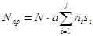
,где N - среднесуточная интенсивность движения транспортного потока в течение расчетного месяца в обоих направлениях, авт./сут. (см. п. 3.16);
а - коэффициент, учитывающий количество полос проезжей части; для однополосной а = 1; для двухслойной а = 0,7;
si - коэффициент приведения нагрузки от транспортного средства i-й марки к расчетной нагрузке (определяется по приложению 3);
j - количество марок транспортных средств в транспортном потоке;
ni - количественная доля транспортных средств i-й марки в транспортном потоке.
10.11. Расчетным считают один из весенних месяцев строительного периода, когда средняя месячная температура наружного воздуха приняла положительные значения и во время которого предполагается наиболее интенсивная эксплуатация проектируемой дороги. Устанавливают расчетный месяц по СНиП «Строительная климатология и геофизика» и по рис. 1 приложения 1 настоящей Инструкции.
10.12. Общий модуль упругости Еобщ дорожной одежды определяют в зависимости от конструкции: для однослойной - по рис. 2; для двухслойной - по рис. 2 и 3 и по методике, приведенной в приложении 2.
При вычислении Еобщ пользуются расчетными модулями упругости материалов и грунтов, представленными в приложениях 4 - 11.
Расчетные значения модуля упругости песков не зависят от влажности: для песков крупных и гравелистых принимаются Е = 136 МПа, для песков средней крупности Е = 126 МПа, для мелких песков Е = 105 МПа и для супеси крупной легкой Е = 63 МПа.
10.13. На участках со слабым основанием в лесных районах следует предусматривать устройство деревогрунтовой конструкции (рис. 8).
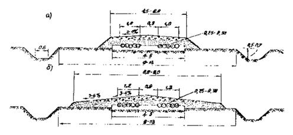
Рис. 8. Схемы насыпей на участках со слабым основанием в лесных районах при ширине дороги 4,5 - 6 м (а) и 6 - 8 м (б)
10.14. При устройстве дорожной одежды на земляном полотне, сложенном переувлажненными грунтами, следует предусматривать укладку под дорожную одежду нетканого синтетического материала.
10.15. При необходимости расчета дорожной одежды можно пользоваться примером, помещенным в приложении 2.
10.16. При проектировании железной дороги следует проработать варианты организации строительства с учетом транспортирования тяжеловесов по притрассовой автомобильной дороге в сухое время года или зимой.
11.1 Водопропускные и водоотводные сооружения и устройства на притрассовых автомобильных дорогах следует проектировать с учетом совместной их работы с аналогичными сооружениями железной дороги.
11.2. Отступления от требований п. 11.1 допускаются в случаях, когда трассы железной и автомобильной дорог размещаются в разных водосборных бассейнах или находятся на удалении друг от друга более 50 м.
11.3. Малые искусственные сооружения притрассовой автомобильной и железных дорог, расположенных на общем полотне или рядом на раздельном, надлежит размещать соосно.
11.4. В случаях, когда достигнуть соосного размещения искусственных сооружений невозможно или нецелесообразно, между ними следует проектировать регуляционное сооружение (канаву, дамбу и т.п.) для беспрепятственного пропуска водного потока, располагая регуляционное сооружение с учетом возможности наблюдения за его состоянием с железнодорожного пути.
11.5. В случаях соосного размещения искусственных сооружений на крутых косогорах устройство для направления потока должно быть запроектировано в виде специального лотка.
11.6. На пересечениях автомобильной дорогой суходолов в обоснованных случаях малые искусственные сооружения допускается для нее не устраивать, предусматривая соответствующее укрепление тальвега для проезда автотранспорта.
11.7. На болотах и марях, где поверхностный сток определить затруднительно, во избежание длительного подпора воды и заболачивания сухих участков местности, влекущих за собой гибель леса, кустарника и другие нежелательные экологические нарушения, малые искусственные сооружения следует назначить без расчета, располагая их обязательно соосно на обеих дорогах через 300 - 500 м одно от другого, но не менее одного на пересекаемое болото или марь.
11.8. Автодорожные мосты на средних водотоках следует размещать по индивидуальным проектам, как правило, с низовой стороны, но взаимоувязано с железнодорожными.
11.9. На средних водотоках со скальным руслом при незначительных расходах и скорости течения до 0,5 м/с, расположенных в сильно пересеченной местности, мосты допускается не устраивать, предусматривая пропуск автотранспорта зимой по льду, а в безморозный период года - вброд.
11.10. Автодорожные мосты через средние водотоки в обоснованных случаях следует проектировать под совмещенную езду поездов и автотранспорта и использовать в качестве временного железнодорожного обхода барьерного места.
11.11 При размещении водопропускных сооружений автомобильной дороги с верховой стороны железнодорожного пути расчетную вероятность превышения расходов паводков следует принимать согласно требованиям главы СНиП II-39-76.
11.12. При размещении автомобильной дороги на раздельном земляном полотне с низовой стороны от железнодорожного пути водопропускные сооружения следует проектировать на расходы вероятностью превышения соответствующих паводков: временные - 10 %, постоянные - 3 %.
11.13 В проектах автодорожных искусственных сооружений, располагаемых с низовой стороны, следует проверять обеспечение нормативного возвышения бровки железнодорожной насыпи согласно требованиям главы СНиП II-39-76.
11.14. При размещении автомобильной дороги на косогоре с верховой стороны от железнодорожного пути водоотвод для защиты обеих дорог должен быть запроектирован общий на полный пропуск расчетного стока с нагорной стороны автомобильной дороги.
11.15. При расположении автомобильной дороги на косогорах с низовой стороны от железнодорожного пути общий водоотвод следует проектировать по косогору выше железнодорожного пути.
11.16. Между железнодорожной насыпью и рядом идущей на отдельном полотне автомобильной дорогой должна быть запроектирована одна водоотводная канава.
11.17. На тоннельных участках водоотводы от притрассовой автомобильной дороги следует проектировать с таким расчетом, чтобы над тоннелем не создавались замкнутые бессточные водосборы, а вода из надтоннельного пространства не попадала в припортальные выемки.
11.18. При выборе поперечных и продольных уклонов водоотводных канав необходимо руководствоваться требованиями СНиП II-39-76.
11.19. На болотах, марях и в грунтах III категории просадочности продольные водоотводные канавы следует устраивать на расстоянии не более 5 м от подошвы, а при наличии грунтов IV категории просадочности в основаниях земляного полотна - не менее 10 м.
11.20. В местах действующих наледей или возможного их появления в период строительства и эксплуатации железной дороги, противоналедные мероприятия и сооружения следует проектировать в комплексе всех сооружений (водопропускных, водоотводных и т.п.; включая притрассовую автомобильную дорогу.
11.21. Через водоотводные канавы и кюветы в местах сосредоточенного прохода людей необходимо предусматривать простейшие мостики с устройством удобных подходов к ним.
11.22. При размещении автомобильной дороги на одной с железной дорогой насыпи водоотвод со стороны железной дороги не предусматривается. В обоснованных случаях допускается устройство лотка у подошвы железнодорожной насыпи.
12.1. Постоянные мосты через большие реки на притрассовых автомобильных дорогах, как правило, проектировать не следует.
12.2. Для пропуска автотранспорта через большие реки надлежит предусматривать низководные или наплавные мосты, паромные и ледовые переправы.
12.3 При наличии законченного строительством постоянного среднего или большого железнодорожного моста допускается на период до ввода железной дороги в постоянную эксплуатацию использовать этот мост для пропуска автотранспорта.
12.4. Средние мосты на притрассовых автомобильных дорогах следует проектировать временного типа.
12.5. Опоры временных мостов должны быть ряжевыми или свайными.
12.6. Пролетные строения для временных мостов следует предусматривать инвентарные - металлические или деревянные.
12.7. На притрассовых автомобильных дорогах следует применять, как правило, металлические гофрированные трубы.
12.8. На логах с малыми бассейнами под притрассовую автомобильную дорогу, располагаемую с нагорной стороны от железной дороги, в качестве водопропускных сооружений допускается предусматривать устройство фильтрующих насыпей.
13.1. Защита притрассовой автомобильной дороги от снежных заносов должна быть активной и осуществляться в основном проходками бульдозеров, самоходных плужных снегоочистителей, прицепных угольников и других снегоочистительных машин и механизмов Поставка соответствующих типов техники должна быть предусмотрена в проекте. Устройства дорогостоящей стационарной защиты следует избегать.
13.2. При расположении автомобильной дороги на общей с железной дорогой насыпи защиту ее от снежных заносов следует проектировать в комплексе с защитой железнодорожного пути.
13.3. При устройстве притрассовой автомобильной дороги на отдельном полотне, удаленном от подошвы железнодорожной насыпи или бровки выемки на расстояние до 30 м, защиту железнодорожного пути от снежных заносов следует предусматривать с учетом защиты притрассовой автомобильной дороги.
13.4. При удалении оси притрассовой автомобильной дороги от железнодорожного земляного полотна на расстояние более 30 м защиту автомобильной дороги от снежных заносов допускается проектировать отдельно. В обоснованных случаях на особо снегозаносимых участках (нулевых местах и насыпях высотой до 0,7 м) допускается применять переносные щиты и устраивать снежные валы, траншеи и т.п.
13.5. В залесенной местности притрассовую автомобильную дорогу следует проектировать так, чтобы имеющаяся древесная и кустарниковая растительность являлась основной защитой от снежных заносов и располагалась непосредственно у подошвы насыпей или бровок выемок, резервов и водоотводных канав.
13.6. При удалении автомобильных дорог от железной дороги на расстояние более 50 м следует предусматривать раздельные лесные просеки для железной и автомобильной дорог.
На территории между обеими просеками лесную и кустарниковую растительность следует охранять.
13.7. Для предупреждения падения деревьев на железнодорожный путь и проезжую часть автомобильной дороги лесной массив в полосе 15 - 20 м от опушки (граница просеки) необходимо очищать от больных и старых деревьев, а также от сухостоя.
13.8. В проектах притрассовых автомобильных дорог должны быть предусмотрены средства и механизмы для борьбы с гололедом.
13.9. Защита притрассовых автомобильных дорог от снежных лавин должна быть запроектирована в комплексе с соответствующей защитой железнодорожного пути.
13.10. Отвод земельных участков под притрассовую автомобильную дорогу должен быть оформлен в комплексе с отводом земли под железную дорогу.
14.1. Комплекс дорожных устройств и обстановка притрассовых автомобильных дорог должны обеспечивать безопасность движения, а также предусматривать обслуживание водителей и автомобилей в пути следования и на стоянках с учетом климатических условий Сибири и Дальнего Востока.
14.2. На пересечениях притрассовой автомобильной дороги с другими автомобильными и с железными дорогами должны быть предусмотрены соответствующие дорожные знаки.
14.3. На всем протяжении притрассовой автомобильной дороги следует предусматривать установку километровых столбов и указателей расположения поселков и действующих телефонных аппаратов. Километровые столбы на автомобильной дороге по возможности следует устанавливать соответственно километражу железной дороги, допуская на автодороге «резаные» километры.
14.4. В местах схода снежных лавин, селей, а также у скальных прижимов, где возможны осыпи и обвалы, необходимо предусматривать установку соответствующих указателей.
14.5. При высоте насыпи более 1 м на кривых следует предусматривать установку направляющих сигнальных столбиков, руководствуясь главой СНиП Нормы проектирования автомобильных дорог.
На особо опасных участках дороги (на кривых малых радиусов, при высоких кривых откосах) надлежит предусматривать ограждения, как правило, в виде деревянных надолбов.
14.6. На притрассовых автомобильных дорогах должна быть предусмотрена установка соответствующих знаков на площадках, предназначенных для перегрузки с автотранспорта на железную дорогу машин, механизмов, оборудования и т.п.
14.7. При проектировании автобусных остановок на притрассовых автомобильных дорогах следует руководствоваться требованиями главы СНиП Нормы проектирования автомобильных дорог.
14.8. В проектах должны быть предусмотрены оборудованные соответствующими сигнальными знаками места стоянок автотранспорта в поселках временного и постоянного типов.
15.1. Проект организации строительства притрассовой автомобильной дороги следует разрабатывать при проектировании железной дороги с уточнением и детализацией в процессе составления рабочей документации.
15.2. Темпы и сроки сооружения притрассовых и всех других построечных автомобильных дорог должны соответствовать графику организации строительства железной дороги.
15.3. Сооружение построечных автомобильных дорог следует проектировать по одной из двух основных схем с головы или на широком фронте. По первой схеме следует сооружать преимущественно построечные дороги небольшого протяжения (до 3 км). Вторая схема может быть применена при необходимости обеспечить высокие темпы строительства притрассовых автомобильных дорог значительной протяженности.
15.4. В проектах организации строительства железной дороги должны быть определены сроки начала и окончания строительства притрассовых автомобильных дорог в целом по всей длине, и по отдельным ее участкам, а также при необходимости - этапы строительства (приложение 12).
15.5. В суровых климатических условиях при определении сроков и этапности строительства притрассовых автомобильных дорог следует учитывать максимальное использование зимников.
15.6. При опережающем строительстве притрассовой автомобильной дорогах дороги ее следует возводить по поперечным профилям, на которых показан также и весь комплекс сооружений железнодорожного пути.
15.7. Расчистку полосы отвода с рубкой просеки следует проектировать в пределах очертания всех сооружений железнодорожного земляного полотна, включающих притрассовую автомобильную дорогу, если она расположена не далее 50 м от оси железнодорожного пути.
15.8. Выносные столбики закрепления трассы должны быть установлены вне зоны работ механизмов.
15.9. В проекте организации строительства выполнение работ по заготовке торфа, устройству хворостяных выстилок и сланей на грунтах III и IV категорий просадочности и на болотах следует предусматривать в зимний период.
15.10. Коэффициент уплотнения верхней части насыпи, сооружаемой из связных грунтов до глубины 0,8 м от верха покрытия, должен быть не менее 0,95, а в нижней части - не менее 0,92.
16.1. В сметах следует предусматривать средства на текущее содержание и при необходимости на капитальный ремонт притрассовых автомобильных дорог, руководствуясь примерной схемой дорожно-эксплуатационной службы (приложение 13).
16.2. Мероприятия по содержанию притрассовых автомобильных дорог должны предусматривать бесперебойное движение транспортных средств в течение всего года или установленного сезона года.
16.3. Весеннее содержание щебеночных покрытий должно предусматривать уборку снега или ледяной корки по мере ее таяния, очистку дороги от грязи, несвязного щебня-катуна и рассыпку каменной мелочи на проезжую часть.
16.4. Весной необходимо наблюдать за состоянием водоотводных и водопропускных сооружений и предупреждать возможные размывы.
16.5. Все водоотводные и водопропускные сооружения в конце зимы, когда уже не ожидаются снежные заносы, должны быть подготовлены к пропуску высоких вод, очищены от льда и снега.
16.6. В летний период для поддержания в исправности гравийного покрытия необходимо проводить периодически легкие профилактические работы с целью устранения поперечной волнистости, образовавшейся колеи, обеспечения проектного поперечного профиля.
16.7. Профилирование следует проводить при оптимальной влажности гравийного материала, например, после дождя, когда материал легко срезается и перемещается.
16.8. Для уменьшения износа гравийного покрытия следует обеспечивать на нем защитный слой толщиной примерно в 1 см из мелкого гравия и крупнозернистого песка в объеме 20 - 30 м3 на 1 км.
16.9. Зимнее содержание притрассовой автомобильной дороги должно предусматривать следующие мероприятия:
защита дороги от снежных заносов;
очистка от снега;
устранение скользкости;
защита от снежных лавин;
установка вдоль дороги вешек, указывающих бровку земляного полотна.
16.10. Дорогу от снега следует очищать на всю ширину земляного полотна; оставшийся слой снега толщиной 3 - 5 см должен быть выровнен по поверхности покрытия, что позволяет развить скорость движения автотранспорта до 80 км/час.
16.11. На участках, где автомобильная дорога расположена на совмещенном полотне с железной дорогой, при сильных снежных заносах должна быть предусмотрена совместная работа автогрейдера или бульдозера и роторного снегоочистителя. При этом автогрейдер или бульдозер должны срезать плотный снег с дороги и перемещать его в сторону нижней бровки, в роторный снегоочиститель отбрасывать снег в сторону от железной дороги.
16.12. При сильных заносах дорог, расположенных на косогорных участках, технология очистки снега должна быть аналогична описанному в п. 16.11, но роторный снегоочиститель должен, как правило, сбрасывать снег в подветренную от дороги сторону.
16.13. Для расчистки снежных отложений на участках, защищенных лесом, следует применять двухотвальные тракторные снегоочистители. На открытых участках местности они должны быть использованы с роторными очистителями.
16.14. Для борьбы со скользкостью следует рассыпать на поверхности проезжей части дороги песок, мелкий гравий или отходы камнедробления с крупностью зерен до 6 мм.
16.15. Не допускаются для борьбы со скользкостью материалы с примесью глинистых частиц, а также материалы из сильновыветривающихся пород, которые легко крошатся пол колесами и зачастую приводят к повышению скользкости.
16.16. Борьбу со скользкостью необходимо вести сразу же с началом гололеда. В первую очередь следует посыпать участки с крутыми уклонами, с кривыми малых радиусов, с плохой видимостью, пересечения дорог и места экстренного торможения.
16.17. В горных лавиноопасных местах следует защищать притрассовую автомобильную дорогу и железную дорогу одновременно. Для этого необходимо устраивать по лавиноопасному склону железобетонные заборы с посадкой по лавиноопасному бассейну или заблаговременное искусственное обрушение снежных масс, пока объем их невелик; в крайних случаях на перспективных дорогах необходимо предусматривать устройство специальных защитных галерей.
16.18. При появлении на притрассовой автомобильной дороге большого количества неровностей и значительном искажении профиля должен быть назначен средний ремонт.
16.19. Ремонтная профилировка гравийного покрытия должна включить очистку ого от пыли и грязи, кирковку, планировку поверхности, россыпь дополнительного количества гравия, профилировку и укатку.
16.20. Проезжая часть должна быть очищена от пыли и грязи механическими щетками и разрыхлена киркованием на глубину выбоин, но не менее 5 см. Поверхность покрытия должна быть спланирована автогрейдерами. После этого должен быть уложен и выровнен автогрейдером ранее загрязненный гравийный материал.
16.21. Гравий должен быть уплотнен проходками катков сначала насухо, а после обжатия материала, когда его зерна займут устойчивое положение, - с поливом (5 л/м2 воды на каждые 5 см россыпи гравия). После окончания уплотнения по поверхности покрытия следует рассыпать для защиты от износа мелкий гравий слоем 1 - 2 см.
16.22. На участках дороги, где наблюдается волнообразование, вызванное окатанностью гравийного материала, при ремонте покрытия в гравий следует добавлять 25 - 30 % щебня или дробленого гравия.
16.23. Текущий ремонт щебеночного покрытия с целью обеспечения его ровности и предотвращения деформаций должен предусматривать устранение отдельных выбоин, колеи, проломов и повреждений кромок.
16.24. При проектировании мероприятий по охране природной среды необходимо руководствоваться действующим законодательством и нормативными документами в этой области.
17.1. Повреждение растительного покрова за пределами площадей, предусмотренных проектом застройки, не допускается.
17.2. Рубку леса и кустарника следует производить в минимально необходимых размерах, ограниченных контурами сооружений.
17.3. Порубочные остатки с территории строительства должны быть убраны; на участках со слабыми основаниями их следует использовать для устройства автодороги.
17.4. Все земельные участки, где разрабатывались карьеры дорожно-строительных материалов, должны быть рекультивированы с посевом травы, посадкой деревьев или кустарника.
17.5. Все водоотводные устройства во избежание оврагообразования должны быть надлежащим образом укреплены.
17.6. В проектах притрассовых автомобильных дорог на всех предприятиях, связанных с работой транспорта, размещением и хранением горюче-смазочных материалов, автозаправочных станций и т.п., следует предусматривать устройство для очистки сточных и поверхностных вод.
17.7. Во избежание возникновения лесных и торфяных пожаров в проектах необходимо предусматривать меры, предупреждающие возгорание леса, торфа, кустарника.
17.8. Защиту автомобильной дороги от возникновения оврагов, оползней, размыва водными и селевыми потоками следует предусматривать в комплексе защитных мероприятий, намечаемых для железнодорожного пути, с помощью специальных насаждений в сочетании с комплексом геотехнических инженерных мероприятий.
17.9. В местах, где земляное полотно притрассовой автомобильной и железной дорог возводится гидронамывом (в особенности в местах с пляжевыми откосами насыпей), в проектах следует предусматривать защиту песчаных сооружений от развеивания ветром, а верхнего строения железнодорожного пути и дорожного покрытия автомобильной дороги - от песчаных заносов.
17.10. Если эксплуатация притрассовой автомобильной дороги после сооружения железной дороги не намечается, то в проекте надлежит предусмотреть разборку всех деревянных искусственных сооружений с расчисткой русл водотоков, рекультивацию всех занимаемых под дорогу площадей.
ОПРЕДЕЛЕНИЕ РАСЧЕТНЫХ ГРУЗОНАПРЯЖЕННОСТИ И ИНТЕНСИВНОСТИ ДВИЖЕНИЯ
1. Для подъездных и притрассовых автомобильных дорог наряду с грузооборотом следует определять расчетные грузонапряженность и интенсивность движения.
Грузонапряженность - общая масса грузов, перевозимых через данное сечение автомобильной дороги в обоих направлениях в единицу времени (год, месяц, сутки), т×км/км.
2. Методика определения расчетной грузонапряженности или интенсивности движения основана на общей закономерности изменения во времени построечных перевозок по притрассовой автомобильной дороге при строительстве новых железных дорог.
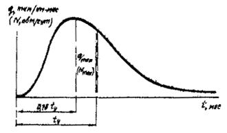
Рис. 1. Кривая изменения грузонапряженности или интенсивности движения притрассовой автомобильной дороги и ее основные параметры
3. Изменение во времени объема перевозок по притрассовой автодороге характеризуют кривые, построенные в координатах t - q или t - N (рис. 1),
где q - грузонапряженность притрассовой автомобильной дороги за месяц, т×км/км;
N - среднесуточная интенсивность движения автомобилей в течение месяца, авт./сут;
t - продолжительность работ в данном сечении трассы (прорубка просеки), мес.
Кривые характеризуют следующие основные параметры:
qmax - максимальная грузонапряженность притрассовой автомобильной дороги, т×км/(км×мес);
Nmax - максимальная среднесуточная интенсивность движения, авт./сут;
ty - длительность работ в данном сечении трассы до укладки железнодорожного пути, мес.
По опыту железнодорожных новостроек Сибири Nma и qmax достигаются при t = 0,75 tу.
4. Максимальная грузонапряженность притрассовой автомобильной дороги за месяц qmax, т×км/(км×мес), определяется по формуле
где Qкм - грузооборот по притрассовой автомобильной дороге за время строительства железнодорожной линии, т×км/км;
К - коэффициент пропорциональности;
Интенсивность движения физических автомобилей в обоих направлениях N, авт./сут, определяется по формуле
Дм - среднее количество дней в календарном месяце;
Кпр - коэффициент использования пробега; в условиях железнодорожного строительства Кпр = 0,5;
Кгр - коэффициент использования грузоподъемности автомобилей, Кгр = 0,9;
Г - средняя грузоподъемность автомобилей, т; зависит от состава парка на данном строительстве;
0,75 - коэффициент, учитывающий неравномерность движения в течение месяца.
5. Кривая изменения грузонапряженности (интенсивности
движения) может быть представлена в относительных координатах и 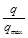 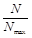
Значения относительных координат кривой изменения грузонапряженности даны в таблице.
|
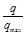 или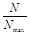 |
или |
||
|
0 |
0 |
1,1 |
0,757 |
|
0,1 |
0,034 |
1,2 |
0,638 |
|
0,2 |
0,138 |
1,3 |
0,522 |
|
0,3 |
0,346 |
1,4 |
0,416 |
|
0,4 |
0,607 |
1,5 |
0,324 |
|
0,5 |
0,826 |
1,6 |
0,242 |
|
0,6 |
0,952 |
1,7 |
0,194 |
|
0,7 |
0,996 |
1,8 |
0,157 |
|
0,75 |
1,0 |
1,9 |
0,128 |
|
0,8 |
0,994 |
2,0 |
0,105 |
|
0,9 |
0,946 |
2,5 |
0,051 |
|
1,0 |
0,862 |
3,0 |
0,045 |
Используя относительные координаты, можно построить кривые изменения грузонапряженности (интенсивности движения) для любого сечения притрассовой автодороги при любых значениях.
6. Кривая изменения грузонапряженности (интенсивности движения) притрассовой автомобильной дороги в дальнейшем используется для определения расчетных грузонапряженности и интенсивности движения автомобилей, определения расчетной нагрузки при проектировании дорожной конструкции, назначения организационно-технологических параметров сооружения автомобильной дороги.
7. Расчетная интенсивность движения Nр - среднесуточная интенсивность в расчетном интервале, приходящаяся на период наибольшей загрузки притрассовой автомобильной дороги, авт./сут.
где b - коэффициент приведения к расчетной интенсивности движения.
Расчетная годовая грузонапряженность qг - средняя годовая грузонапряженность в расчетном интервале времени, приходящаяся на период наибольшей загрузки притрассовой автомобильной дороги, т×км/км.
Величина b принимается в зависимости от интервала времени (от начала работы до укладки пути) по графику (рис. 2).
Рис. 2. Номограмма для определения коэффициента приведения
Расчетный интервал времени принимается равным 36 мес., а при 36 мес. его продолжительность равна
Пример. Определить расчетные значения годовой грузонапряженности и интенсивности движения по притрассовой автомобильной дороге на участке ст. В - ст. Г.
Исходные данные:
Суммарный грузооборот нетто за время строительства железнодорожной линии Qкм = 568 тыс. т×км/км;
Интервал от начала работ на трассе до укладки железнодорожного пути ty = 44 мес. (принят по календарному графику строительства).
Максимальная грузонапряженность притрассовой автомобильной дороги определяется по формулам (1) и (2):
К = 0,0045 × 44 + 0,857 = 1,055,
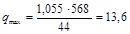
Максимальная интенсивность движения вычисляется по формуле (3) при Дм = 30 дн., Кпр = 0,5; Кгр = 0,9; Г = 5,2 т/авт.
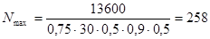
Расчетная годовая грузонапряженность при b = 0,87 (см. рис. 2 настоящего приложения) вычисляется по формуле (5):
qр = 12 × 0,87 × 13,6 = 142 тыс. т×км/км.
Расчетная интенсивность движения физических автомобилей в оба направления определяется по формуле (4).
Nр = 0,87 × 258 = 225 авт./сут.
Исходя из полученных значений показателей, устанавливаем по табл. 3 (п. 4.5), что требуется автодорога категории IVс.
8. Рекомендуется учитывать перспективную грузонапряженность притрассовой и подъездных автомобильных дорог после сдачи железной дороги в эксплуатацию, чтобы выяснить, целесообразно ли иметь в дальнейшем постоянную автомобильную дорогу. Расчетная грузонапряженность (размеры движения) и ее динамика устанавливаются по данным экономического обследования района тяготения новой железной дороги.
Исходные данные
1. Дорожно-климатическая зона и подзона - 1 - 3 (г. Иркутск).
2. Тип местности по характеру и степени увлажнения - 2.
3. Грунт земляного полотна - супесь легкая.
4. Приведенная интенсивность движения расчетной нагрузки Nпр = 300 авт./сут.
Конструирование и расчет дорожной одежды с одним слоем
1. Намечают конструкцию дорожной одежды: покрытие в виде слоя из щебня карбонатной породы прочностью М600 расклинцованного щебнем размером 10 - 20 мм; толщина слоя 25 см.
2. Принимают расчетные характеристики материала (приложение 4) Еп » 350 МПа и земляного полотна (приложения 10, 11) Езп » 42 МПа.
3. Определяют допустимый модуль упругости дорожной одежды Едоп = 196 МПа (по номограмме рис. 1 настоящего приложения).
4. Определяют общий модуль упругости (по номограмме рис. 2 настоящего приложения):
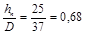 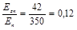
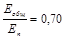
5. Поскольку Еобщ = 245 МПа больше Едоп = 196 МПа на 25 %, целесообразно уменьшить толщину слоя: пусть hп = 20 см, тогда, повторив еще раз расчеты, получают Еобщ = Едоп = 196 МПа.
Конструирование и расчет дорожной одежды с двумя слоями
1. Намечают конструкцию дорожной одежды: покрытие толщиной 20 см из нефтегрунта с добавкой цемента; основание толщиной 40 см из песочно-гравийной смеси, содержащей около 15 % частиц размером менее 0,63 мм с числом пластичности примерно 5.
Рис. 1. Допустимые модули упругости Едоп одежд притрассовых автодорог, состоящие из одного (1) из двух (2) слоев
2. Принимают расчетные характеристики: материала покрытия 250 МПа (приложение 6), материала основания 110 МПа (по рисунку приложения 5) и земляного полотна 42 МПа (приложения 10, 11)
3. Определяют допустимый модуль упругости дорожной одежды (по номограмме рис. 1). Линия 2 соответствует одежде с покрытием из материала, имеющего расчетный модуль упругости Еп = 400 МПа. При уменьшении Еп на 50, 100, 150, 200 МПа допустимый модуль упругости необходимо понижать соответственно на 5, 10, 15, 20 %, Едоп » 168 - 168 × 0,28 » 120 МПа.
4. По номограмме рис. 2 предварительно определяют 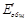
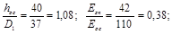
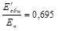
По номограмме рис. 3 определяют Dэф для учета распределяющей способности покрытия:
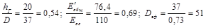
Рис. 2. Номограмма для определения общего модуля упругости двухслойной системы
По номограмме рис. 2 уточняют Еобщ:
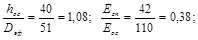
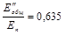 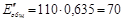
По номограмме рис. 2 определяют Еобщ:
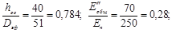
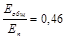
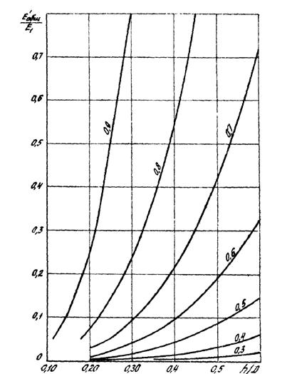
Рис. 3. Номограмма для учета распределяющей способности покрытия двухслойной дорожной одежды при определении (цифры на кривых обозначают отношение D/Dэф)
ПРИВЕДЕНИЕ НАГРУЗКИ ОТ ТРАНСПОРТНОГО СРЕДСТВА К РАСЧЕТНОЙ
|
Марка транспортного средства |
Грузоподъемность, т |
Коэффициент приведения транспортного средства к расчетной нагрузке |
Марка транспортного средства |
Грузоподъемность, т |
Коэффициент приведения транспортного средства к расчетной нагрузке |
|
ГАЗ-53А |
4,0 |
0,08 |
ЗИЛ-ММЗ-555 |
4,0 |
0,15 |
|
ЗИЛ-133 Г1 |
6,0 |
0,30 |
КамАЗ-5511 |
10,0 |
1,05 |
|
Урал-377 В |
7,5 |
0,29 |
МАЗ-503 А |
8,0 |
1,06 |
|
ЗИЛ-130 |
5,0 |
0,20 |
КрАЗ-256 Б! |
12,0 |
3,46 |
|
КрАЗ-257 Б1 |
12,0 |
2,71 |
Магирус 232Д-26К |
14,5 |
4,21 |
|
МАЗ-516 Б |
14,5 |
2,46 |
Татра 1381 |
12,7 |
2,34 |
|
МАЗ-500 А |
8,0 |
1,04 |
Татра 1481 |
15,0 |
4,49 |
|
ЗИЛ-130-76 |
6,0 |
0,36 |
ГКБ-817 |
5,5 |
0,04 |
|
Магирус 290Д-262 |
16,0 |
4,21 |
МАЗ-8926 |
8,0 |
0,21 |
|
КамАЗ-5410 |
8,0 |
0,27 |
ГКБ-8350 |
8,0 |
0,01 |
|
Урал-255 Б |
7,5 |
1,10 |
ПАЗ-3201 |
8,0 |
0,03 |
|
КамАЗ-5410 |
8,1 |
0,27 |
ЛАЗ-699 Н |
8,0 |
0,40 |
|
МАЗ-504 А |
7,7 |
1,03 |
ЛАЗ-4202 |
8,0 |
0,75 |
|
ЗИМ-157 КВ |
4,3 |
0,05 |
ЛИАЗ-677 |
8,0 |
0,53 |
|
КрАЗ-255 В |
8,0 |
0,83 |
Икарус-250 |
8,0 |
0,91 |
|
КрАЗ-258 Б1 |
12,0 |
2,34 |
Икарус-255 |
8,0 |
0,80 |
|
Мерседес Бенц 2232 |
14,0 |
1,65 |
|
|
|
|
Урал 4320 |
5,0 |
0,14 |
|
|
|
|
Вольво 89-32(6´4) |
13,8 |
5,28 |
|
|
|
|
Вольво 89-32(6´4) |
14,5 |
2,14 |
|
|
|
|
Щебень или гравий |
Материал для заклинки |
Необходимый размер зерен, мм |
Модуль упругости слоя щебня, МПа |
Модуль упругости слоя из гравия, МПа |
||
|
Порода |
Прочность, МПа |
Необходимый размер зерен, мм |
||||
|
Карбонатная |
80 - 60 |
20 - 70 |
- |
- |
300 |
210 |
|
|
|
|
Щебень |
10 - 20 |
350 |
250 |
|
|
|
|
Гравийно-песчаная смесь |
0 - 15 |
270 |
190 |
|
Магматическая |
120 - 80 |
20 - 70 |
Щебень |
10 - 20 |
180 |
130 |
|
Песчаниковая |
100 - 80 |
|
Гравийно-песчаная смесь |
0 - 15 |
160 |
110 |
|
Карбонатная и песчаниковая |
40 - 20 |
40 - 150 |
Щебень |
20 - 40 |
300 |
210 |
|
Магматическая |
60 |
- |
- |
- |
220 |
150 |
|
п/п |
Материал конструктивного слоя |
Модуль упругости, Е, МПа |
|
1 |
Щебень из битумосодержащего известняка |
250 - 300 |
|
2 |
Щебень фракционированный из битумосодержащего известняка (по принципу заклинки) |
400 - 500 |
|
3 |
Песок или отходы дробления битумосодержащего известняка |
80 - 100 |
|
4 |
Битумосодержащий песчаник |
100 - 150 |
Зависимость расчетного модуля упругости щебеночных смесей Е от содержания в их составе частиц размером менее 0,63 мм (расчетный модуль упругости гравийных смесей понижают на 3 %) показана на рисунке. Цифры на кривых - числа пластичности частиц.
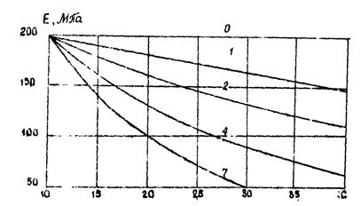
Зависимость расчетного модуля упругости щебеночных смесей от гранулометрии
РАСЧЕТНЫЕ ХАРАКТЕРИСТИКИ ГРУНТОВ, УКРЕПЛЕННЫХ НЕФТЬЮ
|
Грунт |
Число пластичности |
Нефтегрунт |
|||||||
|
без активных добавок |
с добавкой цемента |
о добавкой извести (в пересчете на активную СаО) |
|||||||
|
Расход нефти, % |
Модуль упругости Е, МПа |
Расход нефти, % |
Количество цемента от массы сухого грунта, % |
Модуль упругости Е, МПа |
Расход нести, |
Количество цемента от массы сухого грунта, % |
Модуль упругости Е, МПа |
||
|
Супесь: |
|
|
|
|
|
|
|
|
|
|
легкая тяжелая пылеватая |
3 - 7 |
5 - 8 |
120 |
4 - 5 |
3 - 4 |
220 |
4 - 5 |
2 - 3 |
320 |
|
Суглинок: |
|
|
|
|
|
|
|
|
|
|
легкий |
|
|
|
|
|
|
|
|
|
|
легкий пылеватый |
7 - 12 |
6 - 8 |
100 |
4 - 6 |
3 - 4 |
250 |
4 - 6 |
2 - 3 |
350 |
|
Суглинок: |
|
|
|
|
|
|
|
|
|
|
тяжелый |
|
|
|
|
|
|
|
|
|
|
тяжелый пылеватый |
12 - 17 |
8 - 10 |
120 |
6 - 8 |
4 - 5 |
200 |
6 - 8 |
3 - 4 |
310 |
Примечание. Нижний предел дозировок активных добавок надо принимать для более легких, верхний - для более тяжелых грунтов.
РАСЧЕТНЫЕ ХАРАКТЕРИСТИКИ ГРУНТОВ И МАТЕРИАЛОВ, ОБРАБОТАННЫХ НЕОРГАНИЧЕСКИМИ ВЯЖУЩИМИ
|
Укрепляемый грунт или материал |
Массовая доля портландцемента М300, % |
Модуль упругости, Е, МПа |
|
Подобранная щебеночная и гравийная смесь оптимального или близкого оптимальному составу |
4 6 8 |
400 600 800 |
|
Малопрочный каменный материал, отходы камнедробления |
4 6 8 10 |
200 350 450 550 |
|
Гравийно-песчаная смесь; крупнообломочный грунт; гравелистый, крупный и среднезернистый песок |
4 6 8 10 12 |
180 300 400 500 600 |
|
Легкая супесь, песок мелкий (кроме одноразмерного) и пылеватый |
4 6 8 10 12 14 16 |
200 300 400 500 600 700 800 |
|
Супесь пылеватая; суглинок |
4 6 8 10 12 14 16 |
150 200 250 300 550 400 450 |
Примечание. Для материалов повышенной деформационной способности, т.е. для грунтов, укрепленных комплексными вяжущими (цемент + битумная эмульсия, цемент + гранулированные шлаки или активные золы уноса, цемент + полимеры), значения расчетных характеристик могут быть увеличены на 10 - 15 %.
ГРАНИЦЫ И ХАРАКТЕРИСТИКИ ДОРОЖНО-КЛИМАТИЧЕСКИХ ЗОН И ПОДЗОН
|
Номера дорожно-климатических зон и подзон |
Примерные географические границы и краткая характеристика дорожно-климатических зон и подзон |
|
1 |
Севернее линии, соединяющей Мончегорск-Покой-Ресь-Ошкурья-Сухая-Тунгуска-Канск-госграница-Биробиджан-Де-Касари. Включает географические зоны тундры, лесотундры и северо-восточную часть лесной зоны с распространением вечномерзлых грунтов |
|
I1 (северная половина) |
Расположена севернее линии Нарьян-Мар-Салехард-Курейка-Трубка Удачная-Верхоянск-Дружина-Горный Мыс-Марково |
|
I2 (центральная подзона) |
Расположена восточнее линии устье реки Нижняя Тунгуска-Ербогачея-Лонск-Водайбс-Богдарин; севернее линии Могоча-Сковородино-Зея-Охотск-Палатка-Слаутское. Ограничена с севера III подзоной |
|
I3 (южная подзона) |
Расположена между южной географической границей и вечной мерзлотой и европейской части СССР, в Западной Сибири, на Дальнем Востоке, севернее южной государственной границы в Восточной Сибири и южной границей северной и центральной подзон |
|
II |
От границы I зоны до линии, соединяющей Львов-Житомир-Тулу-Горький-Ижевск-Каштым-Томок-Канск-Биробиджан-Де-Кастри-граница с КНР. Включает географическую зону лесов с избыточным увлажнением грунтов |
|
III (северная подзона) |
Расположена севернее линии, соединяющей Барановичи-Рославль-Клин-Рыбинск-Котлас-Березняки-Ивдель |
Примечания: 1. Расчетную влажность Дальневосточного побережья на глубину 100 км от моря увеличивают на 5 %.
Расчетную влажность в тундре и лесотундре горных и подгорных районов II дорожно-климатической зоны увеличивают на 5 %.
ТИП МЕСТНОСТИ ПО ХАРАКТЕРУ УВЛАЖНЕНИЯ
|
Тип местности по характеру и степени увлажнения |
Условия увлажнения |
Признаки |
|
1 |
Сухие места |
Поверхностный сток обеспечен, грунтовые воды не оказывают существенного влияния на увлажнение верхней толщи почвогрунтов В I зоне, кроме того, мощность сезонно оттаивающего слоя достигает 2,5 м. Грунты гравийно-галечниковые песчаные, а также супесчаные, глинистые, непросадочные с влажностью менее 0,8 |
|
2 |
Сырые места с избыточным увлажнением в отдельные периоды года |
Поверхностный сток не обеспечен, но грунтовые воды не оказывают существенного влияния на увлажнение верхней толщи почвогрунтов. Почвы с признаками поверхностного заболачивания. Весной и осенью появляется застой воды на поверхности. В I зоне, кроме того, это плоские водоразделы, пологие склоны гор и их гилейфы с мощностью сезонно оттаивающего слоя от 1,0 до 2,5 м. Грунты глинистые, просадочные с влажностью 0,7 |
|
3 |
Места с постоянным избыточным увлажнением |
Грунтовые воды или длительно стоящие (более 20 суток) поверхностные воды влияют на увлажнение верхней толщи грунтов; почвы торфяные, оглеенные, с признаками заболачивания, а также солончаки и постоянно Орошаемые территории засушливых областей. В I зоне, кроме того, это заболоченные тальвеги, замкнутые впадины с развитым и торфяным покровом и малой мощность (до 1 м) сезонно оттаивающего слоя. Грунты глинистые, сильно просадочные с влажностью более оптимального значения, содержащие в пределах двойной мощности сезонно оттаивающего слоя линзы льда толщиной более 10 см |
РАСЧЕТНЫЕ ЗНАЧЕНИЯ ВЛАЖНОСТИ (В ДОЛЯХ ОТ ГРАНИЦЫ ТЕКУЧЕСТИ)
|
Дорожноклиматические зоны, подзоны (приложение 8) |
Тип местности по условиям увлажнения (приложение 9) |
Грунт |
|||
|
Супесь легкая |
Песок пылеватый, супесь пылеватая |
Суглинок легкий и тяжелая глина |
Супесь тяжелая и суглинок пылеватый |
||
|
|
1 |
0,54 |
0,58 |
0,64 |
0,67 |
|
I - I |
2 |
0,56 |
0,60 |
0,67 |
0,70 |
|
|
3 |
0,58 |
0,64 |
0,69 |
0,70 |
|
|
1 |
0,58 |
0,58 |
0,64 |
0,67 |
|
I - 2 |
2 |
0,60 |
0,64 |
0,69 |
0,72 |
|
|
3 |
0,64 |
0,67 |
0,72 |
0,77 |
|
|
1 |
0,61 |
0,64 |
0,67 |
0,72 |
|
I - 3 |
2 |
0,64 |
0,67 |
0,72 |
0,77 |
|
|
3 |
0,67 |
0,72 |
0,77 |
0,82 |
|
|
1 |
0,61 |
0,64 |
0,67 |
0,72 |
|
II - 1 |
2 |
0,65 |
0,67 |
0,70 |
0,75 |
|
|
3 |
0,67 |
0,69 |
0,72 |
0,77 |
РАСЧЕТНЫЕ ЗНАЧЕНИЯ МОДУЛЯ УПРУГОСТИ ГРУНТОВ
|
Грунт |
Расчетный модуль упругости Е, МПа, при относительной влажности грунта (доли границы текучести) |
|||||||||
|
0,5 |
0,55 |
0,6 |
0,65 |
0,7 |
0,75 |
0,8 |
0,85 |
0,9 |
0,95 |
|
|
|
I дорожно-климатическая зона |
|||||||||
|
Супесь легкая |
- |
- |
- |
41,4 |
37,8 |
34,1 |
30,5 |
28,1 |
25,6 |
24,4 |
|
Песок пылеватый |
- |
- |
- |
41,3 |
37,7 |
34,0 |
30,5 |
28,0 |
25,6 |
24,4 |
|
Супесь пылеватая |
- |
- |
- |
41,7 |
38,0 |
34,3 |
30,7 |
28,2 |
25,8 |
24,6 |
|
Суглинок легкий и тяжелая глина |
- |
- |
- |
- |
31,8 |
26,9 |
23,3 |
19,6 |
17,2 |
13,5 |
|
Супесь тяжелая пылеватая, суглинок пылеватый |
- |
- |
- |
- |
31,9 |
27,0 |
23,3 |
19,7 |
17,2 |
13,5 |
|
|
II дорожно-климатическая зона |
|||||||||
|
Супесь легкая |
70,7 |
60,9 |
57,3 |
53,6 |
49,9 |
46,3 |
43,9 |
42,8 |
41,5 |
40,3 |
|
Песок пылеватый |
97,2 |
91,2 |
85,1 |
79,0 |
72,9 |
66,8 |
60,9 |
54,8 |
48,7 |
43,9 |
|
Супесь пылеватая |
98,0 |
91,9 |
85,7 |
79,6 |
73,5 |
67,4 |
61,4 |
55,2 |
49,1 |
44,2 |
|
Суглинок легкий и тяжелая глина |
109,9 |
91,6 |
73,3 |
51,3 |
41,5 |
34,2 |
29,4 |
25,7 |
24,5 |
23,3 |
|
Супесь тяжелая пылеватая, суглинок пылеватый |
110,2 |
91,9 |
73,5 |
55,1 |
46,5 |
39,2 |
32,2 |
28,2 |
27,0 |
25,8 |
КАЛЕНДАРНОЕ ПЛАНИРОВАНИЕ ЭТАПНОГО СООРУЖЕНИЯ ПРИТРАССОВОЙ АВТОМОБИЛЬНОЙ ДОРОГИ
1. Сроки производства работ I этапа планируются в соответствии с графиком организации строительства железной дороги и временем наступления зимнего сезона. Работы 2 этапа целесообразно выполнять по мере открытия движения автомобилей по трассе, вслед за I этапом. Крайним сроком для окончания работ 3 этапа считать момент достижения интенсивности движения 50 автомобилей в сутки.
2. Для установления временя полного окончания строительства автомобильной дороги (3 этап) можно использовать номограмму на рис. 1.
Рис. 1. Номограмма для определения интервала времени от начала работ до достижения заданной интенсивности движения по притрассовой автодороге.
Пример. Определим интервал t50 при Nmax = 563 авт/сут. и ty = 40 мес.
Откладываем по оси Nmax значение 563 авт/сут.; проводим вправо горизонтальную прямую до кривой N = 50 авт/сут.; от точки пересечения проводим вертикальную прямую до наклонной прямой, соответствующей tу = 40 мес., от точки пересечения проводим вправо горизонтальную прямую до шкалы t50; читаем результат t50 = 7 мес.
Найденные с помощью номограммы значения t50 показывают резерв времени для развертывания и окончания сооружения притрассовой автомобильной дороги и позволяют наметить сроки выполнения этапов.
3. Этапное сооружение автомобильной дороги целесообразно подчинить единому циклу. Продолжительность цикла один год, протяженность захватки по трассе принимается равной годовому приросту фронта строительства железной дороги.
Для районов Сибири и Дальнего Востока рекомендуются следующие ориентировочные сроки выполнения этапов: I этап - с ноября по январь - февраль; 2 этап - с ноября по апрель - май до наступления весенней распутицы); 3 этап - с мая и далее (летом и осенью).
Иногда между выполнением 2-го и 3-го этапов при медленной росте перевозок можно допускать разрыв до полутора лет.
Принципиальный график годового цикла сооружения притрассовой автомобильной дороги в 3 этапа изображен на рис. 2.
Рис. 2. График годового цикла этапного сооружения притрассовой автодороги:
1, 2, 3 - этапы; Lp - годовой прирост фронта строительства по трассе железной дороги
4. При разработке календарного графика этапного сооружения притрассовой автомобильной дороги используются следующие исходные данные:
а) календарный график организации строительства железнодорожной линии и значения tу, определенные по этому графику;
б) результаты расчета грузооборота по притрассовой автомобильной дороге за все время строительства железнодорожной линии (см. п. 3.9);
в) значения qmax и Nmax (см. приложение 1).
5. На график наносятся:
а) сроки начала работ на трассе (прорубка просеки) и окончания строительства притрассовой автомобильной дороги в соответствии с календарным графиком организации строительства железнодорожной линии;
б) время достижения интенсивности движения автомобилей (50 авт./сут.), найденное по известным Nmax и tу, с помощью номограммы рис. 1; сроки выполнения этапов по годам (с учетом рекомендаций пп. 1 - 3).
В необходимых случаях при изменении времени начала работ по трассе железнодорожной линии производится корректировка сроков выполнения 3-го этапа сооружения автомобильной дороги.
ДОРОЖНО-ЭКСПЛУАТАЦИОННАЯ СЛУЖБА
(примерная схема)
1. Содержание и текущий ремонт основных построечных автодорог, включая притрассовую автодорогу, возлагается на дорожно-эксплуатационное управление (ДЭУ), функционирующее в составе генподрядной организации на правах строительно-монтажного поезда.
2 В основе ДЭУ следует иметь 2 - 4 управления дорожного прораба (УДП). Каждый УДП включает 2 - 4 участка дорожного мастера (УДМ). Дорожному мастеру подчинены 1 - 3 механизированных бригады (МБ), работу которых он планирует и организует на закрепленном за УДМ участке (участках) построечной автодороги. Примерная схема дорожно-эксплуатационной службы треста (Управления строительства) приведена ниже.
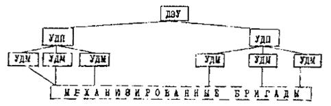
3. Протяженность построечных автодорог, обслуживаемых линейными подразделениями, назначается в зависимости от категории дороги, размера перевозок и условий эксплуатации (таблица).
|
Линейное подразделение |
Сокращенное название подразделения |
Протяженность автодорог, км, обслуживаемых подразделением, по категориям |
|
|
IVc, Vc |
VIc |
||
|
Дорожно-эксплуатационное управление |
ДЭУ |
200 - 300 |
300 - 400 |
|
Управление дорожного прораба |
УДП |
70 - 100 |
100 - 150 |
|
Участок дорожного мастера |
УДМ |
25 - 40 |
30 - 60 |
|
Механизированная бригада |
МБ |
- |
- |
4. Техническое вооружение участка дорожного мастера назначается в зависимости от протяженности закрепленного за УДМ участка дороги и местных условий. На вооружении УДМ должны быть экскаваторы, бульдозеры, автогрейдеры, катки, автосамосвалы, необходимый инструмент для содержания и ремонта полотна дороги и искусственных сооружений.
Состав механизированных бригад в УДН и их техническое вооружение определяются в соответствии с принятыми в ДЭУ принципами организации дорожно-эксплуатационной работы, характером и уровнем специализации МБ и объемом выполняемых работ.
5. Для обеспечения нормальных условий содержания и ремонта автодорог необходимо предусматривать возведение зданий ДЭУ, УДП, УДМ, жилых домов, гаражей, ремонтных мастерских, пунктов обогрева рабочих, вахтовок и др. Здания могут быть постоянные и временные, стационарные и передвижные. Жилую площадь следует определять из условия полного обеспечения жильем всего состава рабочих и служащих.
СОДЕРЖАНИЕ